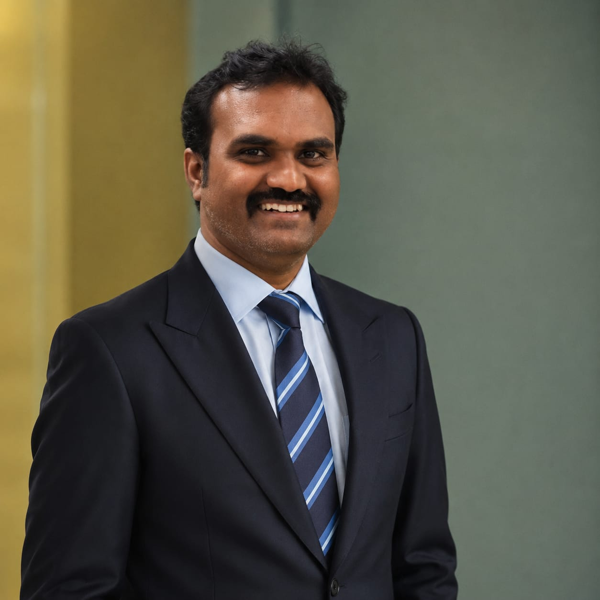

Blockchain technologist and fintech strategist leading regulatory-compliant crypto exchange and digital-gold platforms from Chennai, India.

Gold is the most trusted asset on earth — and the worst served by technology. Crypto is the newest — and the least trusted. Sivachandran builds the compliant infrastructure that closes both gaps.
As Co-Founder and Chief Technology Officer of INOCYX, he leads the engineering of secure, scalable, and regulatory-compliant digital-asset trading infrastructure — from high-performance matching engines to real-world asset tokenization platforms.
As Founding Director of Aadigo, he sets the direction for a multi-jurisdiction digital-gold platform spanning India, Singapore, Malaysia and Indonesia, and owns its relationships with regulators and investors across all four markets.
He holds a Ph.D. in Information and Communication Engineering from Anna University and brings over a decade of experience spanning blockchain architecture, algorithmic trading systems, cybersecurity, compliance, and financial operations.
A regulatory-compliant digital-asset platform incubated under the Government of India's STPI FINBLUE program and registered as a Reporting Entity with the Financial Intelligence Unit (FIU) of India. INOCYX focuses on security, transparency and liquidity, and is expanding its regulatory footprint internationally, including Thailand.
One gram of gold, five ways to hold it. Aadigo turns a single vaulted gram into a financial primitive — bought, leased for yield, pledged for credit, held as a regulated on-chain token, or redeemed for the physical bar — on one identity and one double-entry ledger, at a published spread of 1.5% or less.